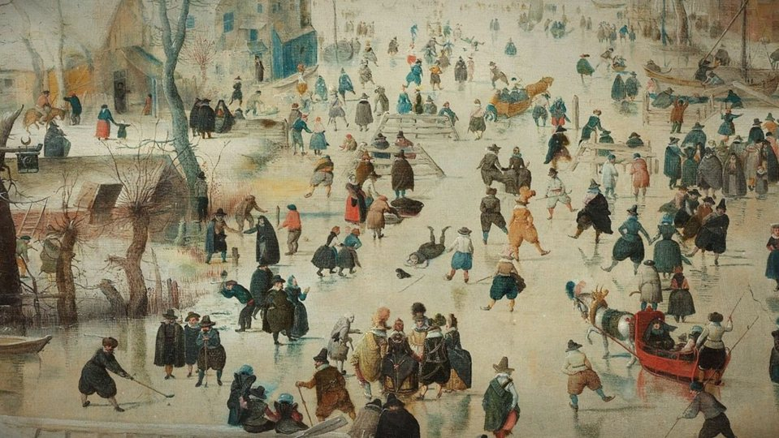

Essais d’illustration animée, à partir de tableaux du XVIIe siècle

L’armée du duc de Bavière, l’hiver, la chambre chauffée d’un poêle et les trois rêves venus « d’en haut », racontés avec des tableaux de Snayers, Avercamp, Rembrandt, De Heem et Frans Hals.
Épisode 1 · 1 min 10 · version 2, d’après des tableaux